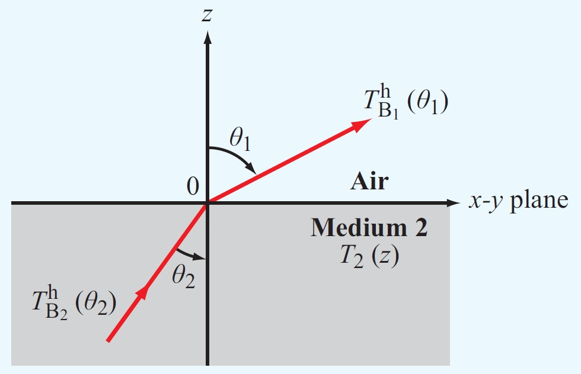

Code 6.1
Emissivity of Homogeneous Medium with Planar Boundary
This module computes the
emissivity of a planar dielectric medium viewed from air (with
ϵ1 = 1) at incidence angle
θ1, for both h and v
polarizations.
ϵ2=
ϵ2' -j
ϵ2''

Real Part: ϵ2':
Imag Part: ϵ2'':
Emissivity from Planar Dielectric
Emissivity
Angle, Degrees
Note: Once selected, the right and left arrow-keys can be used to move
the sliders.